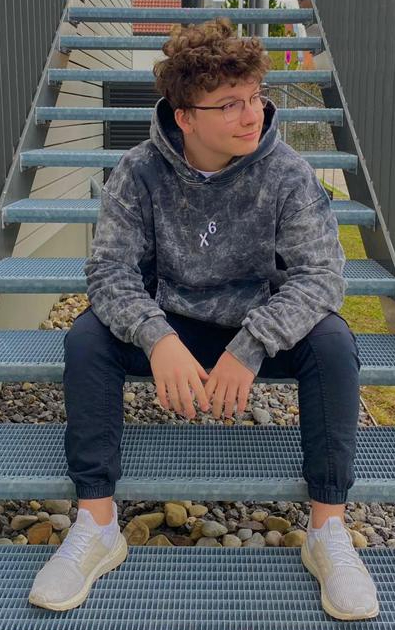

 Hey mein Name ist Leon ich bin 22 Jahre jung und ich interessiere mich schon seit 14 Jahren für Computer, davor waren es Konsolen, aber mit 12 habe ich einen eigenen Computer bekommen und habe viele Videospiele gespielt, jedoch nie hinterfragt wie diese funktionieren. Das Interesse dahinter kam erst als ich meinen ersten Computer selber zusammen gebaut habe und erste Einblicke in die Computerwelt bekommen hab. Mit dem zusammenbauen eines Computers kam auch die Wissbegierde mehr über die Funktionalitäten der Programme eines Computers zu lernen und ich begann eine Ausbildung zum Fachinformatiker in der Anwendungsentwicklung.
Neben meiner Leidenschaft für Computer, schaue ich gerne Serien, koche gerne aber am liebsten kreiere ich neue Burger und verbringe viel Zeit mit meiner Katze.
Ansonsten gibt es nicht viel über mich zu erzählen, außer das ich Japan liebe, gerne Reise und essen liebe.